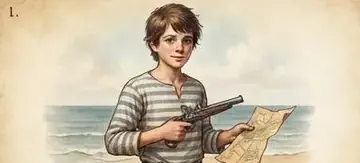
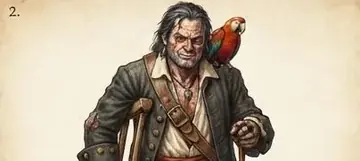
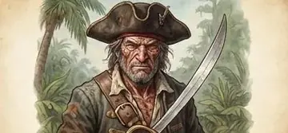
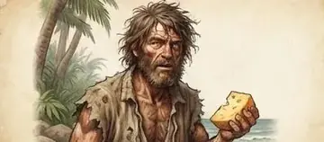
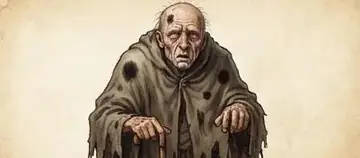
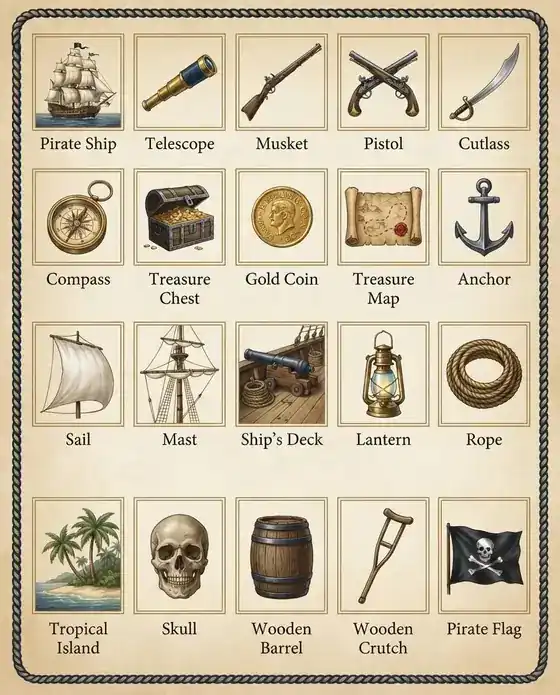

Explore / Adventure & Exploration
Treasure Island
by Robert Louis Stevenson, Scotland (1850–1894)
A dead sailor's sea chest, a black spot and a stained map: when young Jim Hawkins finds the chart to Captain Flint's buried gold, he sails on the Hispaniola with a charming one-legged cook who is not what he seems.
5 parts, 15 chapters. Reading edition with chapter summaries.
The Parts
Table of Contents
Part I: The Mystery
Part II: The Voyage
Part III: The Island
Part IV: The Battle
Part V: The Treasure
Dramatis Personae
-

Jim Hawkins Innkeeper's son, later cabin boy -

Long John Silver Charming ship's cook, secret mutineer - Dr. Livesey Village doctor and loyal friend
- Squire Trelawney Finances the expedition
- Captain Smollett Strict master of the Hispaniola
-

Billy Bones Old sailor with the heavy sea chest -

Ben Gunn Castaway marooned on the island - Israel Hands Pirate left aboard the Hispaniola
-

Blind Pew Blind beggar who brings the Black Spot
Props and places

About the Author
Robert Louis Stevenson was a Scottish novelist, poet and travel writer, born in Edinburgh. Treasure Island, published in 1883, made him internationally famous; he went on to write The Strange Case of Dr Jekyll and Mr Hyde and Kidnapped, and spent his last years in Samoa.
Chapters here are formatted for reading convenience from the authoritative edition.